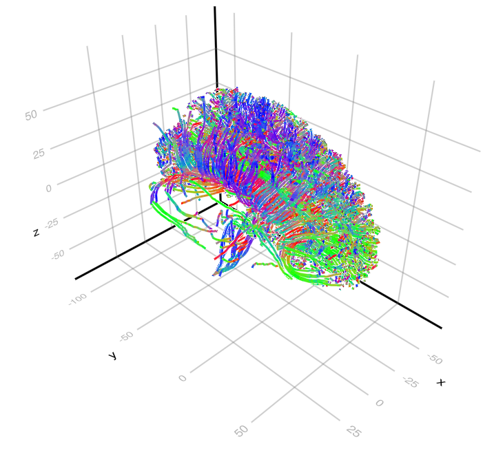

Tractography.jl
This Julia package aims at tractography by taking advantage of parallel and specific hardwares (e.g. GPU). Tractography aims at reconstructing white matter fiber bundles using diffusion-weighted MRI. It thus aim to study the structural connectivity of the brain.

📦 Installation
Assuming that you already have Julia correctly installed, it suffices to import Tractography.jl in the standard way:
import Pkg; Pkg.add("Tractography")
📚 Citing this work
To come...
🧑💻 Other softwares
There are several good softwares already available.
- MRtrix the main software to perform, among other things, tractography. It lacks GPU capability though.
- Fibers.jl to deal with dMRI data.
- Trekker
- Entrack
In Julia, the present package seems to be the only one focused on tractography.
A word on performance
The examples which follow have not all been written with the goal of performance but rather simplicity (for now).
However, note that this code was used to sample 500 000 000 000 streamlines on GPU for a recent publication.
- Yanis Aeschlimann, Samuel Deslauriers-Gauthier, Romain Veltz. GPU tractography: What can we learn from half a trillion streamlines? International Society for Tractography Conference - IST 2025, Oct 2025, Bordeaux (France), France. ⟨hal-05272265⟩